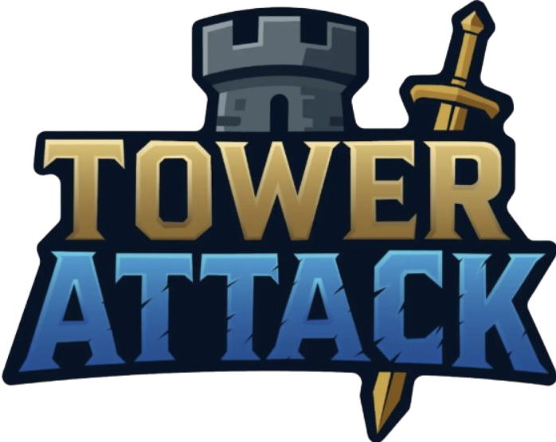

✦ 2024–2025 · UNITY · C# · ÉQUIPE DE CINQTower Attack.
Une première année, un royaume à sauver, un canard venu de Challans… et beaucoup d’idées devenues réalité.
UI / UXStorytellingLevel designMini-jeuCommunication
Découvrir la soutenance ↓ 
Découvrir le projet en images. ♡
Avant les explications, voici notre véritable présentation de soutenance. Navigue avec les flèches, puis explore mon travail plus bas.
✦ 02 · STORYTELLINGUn canard de Challans, un royaume de code.
Célestin, notre mascotte, vient de Challans, ma ville de naissance. J’ai eu envie de lui donner un rôle dans Tower Attack en faisant un clin d’œil au rubber duck debugging : cette méthode qui consiste à expliquer son code à un canard pour mieux identifier ses erreurs. Dans notre univers, Célestin devient le roi du C#, et les bugs prennent vie sous la forme d’adversaires. J’aimais l’idée de transformer une référence de développeur en véritable fil narratif.
✦ 04 · MA FIERTÉUn jeu dans le jeu.
Quand quelqu’un crée un serveur multijoueur, il doit attendre qu’un autre joueur le rejoigne. Plutôt que de laisser un écran figé, j’ai imaginé un mini-jeu jouable pendant l’attente. J’ai réalisé cette expérience en 2D, avec un chevalier, un ennemi doté de comportements automatisés, des attaques et une boucle de jeu. Je l’ai développé pendant une nuit de travail intense. C’est une création particulièrement importante pour moi : dans une année où il n’a pas toujours été facile de faire reconnaître mon travail au sein de l’équipe, elle m’a permis de prendre confiance dans ce que j’étais capable de construire par moi-même.
Vidéo de démonstration du projet
Trois cartes, trois ambiances.
Au départ, une seule carte était prévue. J’ai finalement réalisé trois environnements qui suivent l’évolution temporelle de l’histoire.
La première carte était finalement trop vaste pour notre gameplay, presque pensée comme un monde ouvert. Les deux suivantes ont été réalisées à l’aide de prefabs pour respecter les délais ; j’aurais aimé en modeler davantage à la main.
✦ 06 · IDENTITÉ VISUELLEDu code… jusqu’à la jaquette.
J’ai créé les logos du projet et participé à son identité visuelle, jusqu’à la jaquette. J’ai aussi photographié Célestin pendant mes promenades pour alimenter les premières publications du compte Instagram Tower Coders. Voir notre jeu prendre forme comme un objet que l’on pourrait présenter et partager a été un moment marquant de ma première année.
✦ 07 · BILANCe que Tower Attack m’a appris.
Ce projet m’a fait progresser en C#, Unity, UI/UX, création de scènes, conception de systèmes de progression et résolution de problèmes techniques. J’ai rencontré des textures roses, des difficultés de rendu de l’eau et des soucis de caméra. J’ai aussi appris à arbitrer entre une idée ambitieuse et ce qu’on peut réellement livrer avant une échéance. Surtout, Tower Attack m’a confirmé que j’aimais donner vie à des univers, jusque dans leurs détails.
« Ce n’est pas un jeu parfait, mais c’est celui qui m’a montré que je pouvais donner vie à mes idées. »